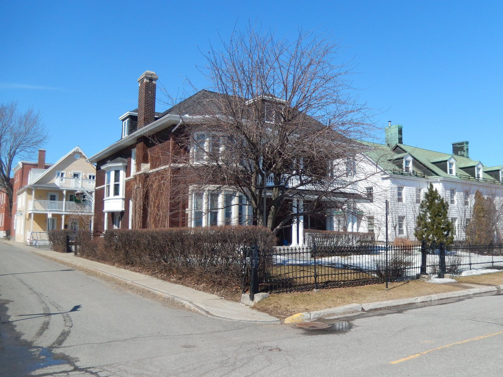

| Place | Local name | Phase years | Storeys | Roof | Window | Cladding | Garage |
|---|---|---|---|---|---|---|---|
| Charlesbourg (Trait-Carré) | Cubic house (Four Square) La maison cubique (ou « Four Square ») | 1900 – 1945 | 2 | hipped | vertical | wood-clapboard, clay-brick | – |
| Gatineau | Cubic house (maison cubique) La maison cubique | 1900 – 1925 | 2–2.5 | hipped-or-pyramidal | – | clay-brick-red, wood-clapboard, concrete-block | – |
| Île d'Orléans | Cubic house (Four Square) La maison cubique | 1900 – 1935 | 2 | hipped-or-pyramidal | vertical | brick, wood, cedar-shingle, embossed-tin, asbestos-cement-tile | – |
| Lévis | Cubic house (maison cubique) Cubique | 1900 – 1945 | 2 | hipped-or-pyramidal | – | clay-brick, wood-clapboard, wood-shingle, asbestos-cement-tile | – |
| Town of Mount Royal | Faubourg House Maison faubourienne | 1915 – 1935 | 2 | flat | vertical-2to1 | clay-brick-red | detached-or-set-back |
| Pointe-Claire | Cubique — massive symmetrical block, imposing gallery, low hipped roof L'architecture de style Cubique | 1855 – 1930 | 2 | hipped | vertical | brick, wood-clapboard, roughcast | – |
| Québec City | Cubic house (Four Square) Maison cubique | 1875 – 1930 | 2–2.5 | hipped-or-pyramidal | vertical | clay-brick, wood-clapboard, wood-shingle, asbestos-cement-shingle | – |
| Saint-Lambert | Cubic (Four Square) house La maison cubique | 1875 – 1930 | 2 | hipped-or-pyramidal | vertical | clay-brick | none |
| Trois-Rivières | Cubic house (Four-square) La maison cubique (courant cubique) | 1907 – 1945 | 2 | hipped-or-pyramidal | vertical | clay-brick, wood-shingle, wood-clapboard, stucco | none |


